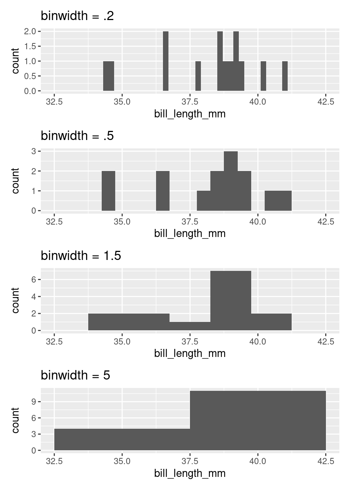
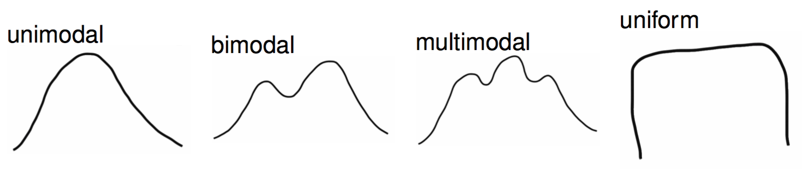
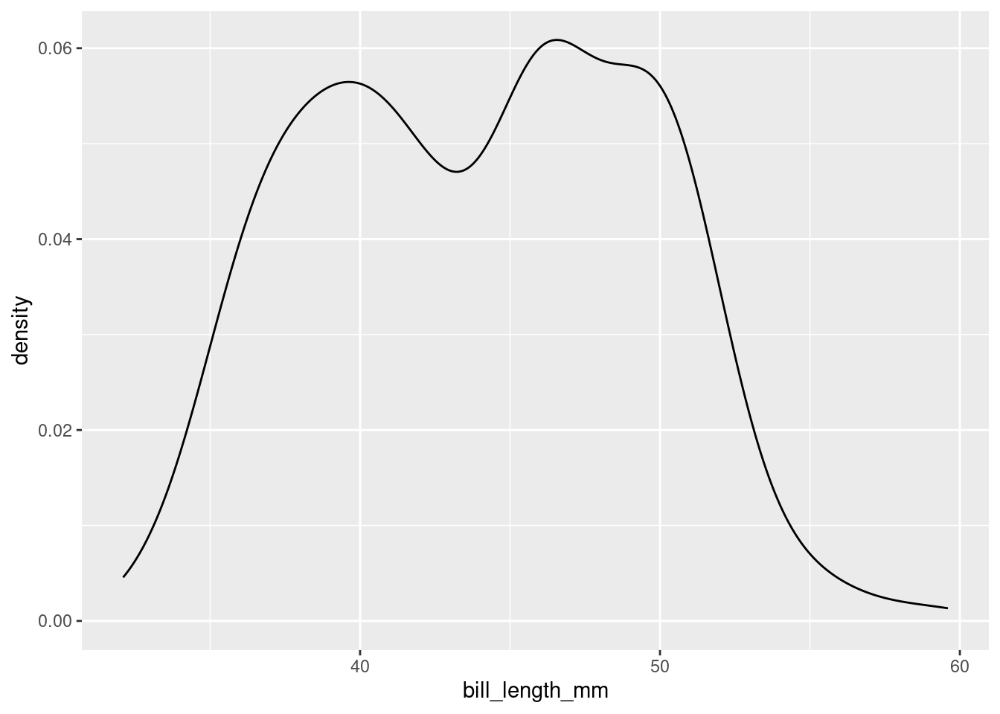
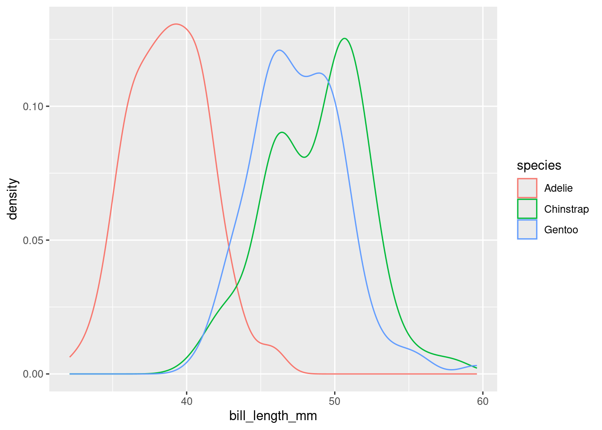
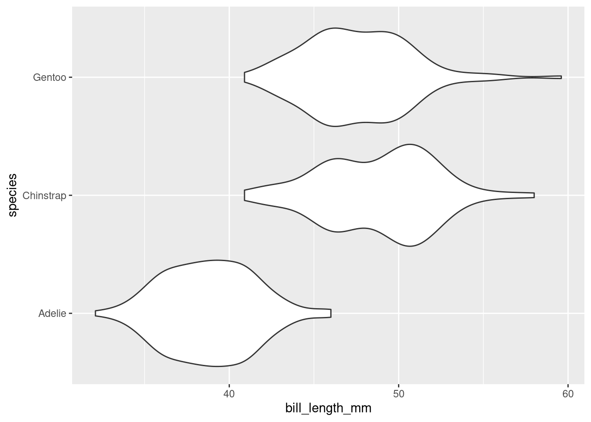

Man feigns madness, contemplates life and death, and seeks revenge.
Son avenges his father, and it only takes four hours.
A tragedy written by the English playwright around 1600.
29,551 words on a page.
You may recognize each of these as summaries of the play, “Hamlet”. None of these are wrong, per se, but they do focus on very different aspects of the work. Summarizing something as rich and complex as Hamlet invariably involves a large degree of omission; we’re reducing a document of 29,551 words down to a single sentence or phrase, after all. But summarization also involves important choices around what to include.
The same considerations of omission and inclusion come into play when developing a numerical or graphical summary of a data set. Some guidance to bear in mind:
What should I include?
Qualities relevant to the question you’re answering or claim you’re making
Features that are aligned with the interest of your audience
What should I omit?
Qualities that are irrelevant, distracting, or deceptive
Replicated or assumed information
In these notes we’ll keep this guidance in mind as we discuss how to summarize numerical data with graphics, in words, and with statistics. Specifically, we will learn how to:
Summarize one numerical variable
Summarize one numerical variable broken up into levels of a second, categorical variable.
Summarizing two numerical variables is a task which deserves its own set of notes; that set of notes will come later on!
Code along
As you read through these notes, you’ll find figures and tables that were produced by running R code. Specifically, you will see visualizations constructed with ggplot2, and tables created with another package in the tidyverse library, dplyr.
The ggplot2 code for the visualizations will be presented below. We will introduce dplyr in the Ideas in Code section.
Feel free to open up RStudio and code along with us, making sure that you load the stat20data library and penguins dataset as we did last time!
Constructing Graphical Summaries
Let’s turn to an example admittedly less complex than Hamlet: the Palmer penguins. One of the numerical variables Dr. Gorman recorded was the length of the bill in millimeters. The values of the first 16 penguins are:
We have many options for different plot types that we could use to summarize this data graphically. To understand the differences, it’s helpful to lay out the criterion that we hold for a summary to be a success. Let’s call those criteria the desiderata, a word meaning “that which is desired or needed”.
For our first graphic, let’s set a high bar.
Desiderata
All information must be preserved.
The most commonly used graphic that fulfills this criterion is the dot plot.
The dot plot is, in effect, a one-dimensional scatter plot. Each observation shows up as a dot and its value corresponds to its location along the x-axis. Importantly, it fulfills our desiderata: given this graphic, one can recreate the original data perfectly. There was no information loss.
As the number of observations grow, however, this sort of graphical summary becomes unwieldy. Instead of focusing on the value of each observation, it becomes more practical to focus on the general shape of the distribution. Let’s consider a broader goal for our graphic.
Desiderata
Balance depiction of the general characteristics of the distribution with a fidelity to the individual observations.
There are several types of graphics that meet this criterion: the histogram, the density plot, and the violin plot.
At first glance, a histogram looks like deceptively like a bar chart. There are bars arranged along the x-axis according to their values with heights that correspond to the count of each value found in the data set. So how is this not a bar chart?
A histogram involves aggregation. The first step in creating a histogram is to divide the range of the variable into bins of equal size. The second step is to count up the number of observations that occur in each bin. In this way, some observations will have their own bar (every bar with a count of one) but other observations will be aggregated into the same bar: the tallest bar, with a count of 3, corresponds to all observations from 39.09 to 39.30: 39.1, 39.2, and 39.3.
The degree of aggregation performed by the histogram is determined by the binwidth. Most software will automatically select the binwidth1, but it can be useful to tinker with different values to see the distribution at different levels of aggregation. The binwidth argument within geom_histogram() can be altered to implement this. Here are four histograms of the same data that use four different binwidths (try setting your histogram’s binwidth to one of the options in the below plots)!

If you are interested in only the coarsest structure in the distribution, best to use the larger binwidths. If you want to see more detailed structure, a smaller binwidth is better.
There is a saying that warns about times when you, “can’t see the forest for the trees”, being overwhelmed by small details (the trees) and unable to see the bigger picture (the forest). The histogram, as a graphical tool for summarizing the distribution of a numerical variable, offers a way out. Through your choice of binwidth, you can determine how much to focus on the forest (large bindwidth) or the trees (small binwidth).
Density plots
Imagine that you build a histogram and place a cooked piece of spaghetti over the top of it. The curve created by the pasta is a form of a density plot.
Besides the shift from bars to a smooth line, the density plot also changes the y-axis to feature a quantity called “density”. We will return to define this term later in the course, but it’s sufficient to know that the values on the y-axis of a density plot are rarely useful. The important information is relative: an area of the curve with twice the density as another area has roughly twice the number of observations.
The density plot, like the histogram, offers the ability to balance fidelity to the individual observations against a more general shape of the distribution. You can tip the balance to feature what you find most interesting but adjusting the bandwidth of the density plot. This can be done by including the bw argument inside of density and setting it to a number (again, try setting it to one of the options in the below plots)!
A density curve tends to convey the overall shape of a distribution more quickly than does a histogram, but be sure to experiment with different bandwidths. Strange but important features of a distribution can be hidden behind a density curve that is too smooth.
Violin plots
Often we’re interested not in the distribution of a single variable, but in the way the distribution of that variable changes from one group of observational units to another. Let’s add this item to our list of criteria for a statistical graphic.
Desiderata
Balance depiction of the general characteristics of the distribution with a fidelity to the individual observations.
Allow for easy comparisons between groups.
There are several different ways to compare the distribution of a variable across two or more groups, but one of the most useful is the violin plot. Here is a violin plot of the distribution of bill length across the three species of penguins.
ggplot(data =penguins, mapping =aes(x=bill_length_mm, y =species))+geom_violin()
The distribution of bill length in each species is represented by a shape that often looks like a violin but is in fact a simple density curve reflected about its x-axis. This means that you can tinker with a violin plot the same as a density plot, but changing the bandwidth.
If this plot type looks familiar, you may have seen its cousin, the box plot.
ggplot(data =penguins, mapping =aes(x=bill_length_mm, y =species))+geom_boxplot()
The box plot conveys a similar story to the violin plot: Adelies have shorter bills than Chinstraps and Gentoos. Box plots have the advantage of requiring very little computation to construct2, but in a world of powerful computers, that is no longer remarkable. What they lack is a “smootness-knob” that you can turn to perform more or less smoothing. For this reason, violin plots are a more flexible alternative to box plots.
Describing Distributions
The desideratum that we used to construct the histogram and the violin plot include the ability to “depict general characteristics of the distribution”. The most important characteristics of a distribution are its shape, center, and spread.
When describing the shape of a distribution in words, pay attention to its modality and skew. The modality of a distribution captures the number of distinct peaks (or modes) that are present.

A good example of a distribution that would be described as unimodal is the original density plot of bill lengths of 16 Adelie penguins (below left). There is one distinct peak around 39. Although there is another peak around 34, it is not prominent enough to be considered a distinct mode. The distribution of the bill lengths of all 344 penguins (below right), however, can be described as bimodal.
Multiple modes are often a hint that there is something more going on. In the plot to the right above, Chinstraps and Gentoo penguins, which are larger, are clumped under the right mode while the smaller Adelie penguins are dominant in the left mode.
The other important characteristic of the shape of a distribution is its skew.
The skew of a distribution describes the behavior of its tails: whether the right tail stretches out (right skew), the left tail stretches out (left skew), or if both tails are of similar length (symmetric). An example of a persistently right skewed distribution is household income in the United States:
In the US, the richest households have much much higher incomes than most, while the poorest households have incomes that are only a bit lower than most.
When translating a graphical summary of a distribution into words, some degree of judgement must be used. When is a second peak a mode and when is it just a bump in the distribution? When is one of the tails of a distribution long enough to tip the description from being symmetric to being right skewed? You’ll hone your judgement in part through repeated practice: looking at lots of distributions and readings lots of descriptions. You can also let the questions of inclusion and omission be your guide. Is the feature a characteristic relevant to the question you’re answering and the phenomenon you’re studying? Or is it just a distraction from the bigger picture?
Modality and skew capture the shape of the distribution, but how do we describe its center and spread? “Eyeballing it” by looking at a graphic is an option. A more precise option, though, is to calculate a statistic.
Constructing Numerical Summaries
Statistics is both an area of academic study and the object of that study. Any numerical summary of a data set - a mean or median, a count or proportion - is a statistic. A statistic is, fundamentally, a mathematical function where the data is the input and the output is the observed statistic.
Statisticians don’t just study statistics, though, they construct them. A statistician gets to decide the form of \(f\) and, as with graphics, they construct it to fulfill particular needs: the desiderata.
To examine the properties of common statistics, let’s move to an even simpler data set: a vector called x that holds 11 integers.
\[8, 11, 7, 7, 8, 11, 9, 6, 10, 7, 9\]
Measures of Center
The mean, the median, and the mode are the three standard statistics used to measure the center of a distribution. Despite their ubiquity, these three are not carved somewhere on a stone tablet. They’re common because they’re useful and they’re useful because they were constructed very thoughtfully.
Let’s start by laying out some possible criteria for a measure of center.
Desiderata
Synthesizes the magnitudes of all \(n\) observations.
As close as possible to all of the observations.
The (arithmetic) mean fulfills all of these needs.
The mean synthesizes the magnitudes by taking their sum, then keeps that sum from getting larger than any of the observations by dividing by \(n\). In order to express this function more generally, we use the following notation
where \(x_1\) is the first observation, \(x_2\) is the second observation, and so on till the \(n^{th}\) observation, \(x_n\); and \(\bar{x}\) is said “x bar”.
The mean is the most commonly used measure of center, but has one notable drawback. What if one of our observations is an outlier, that is, has a value far more extreme than the rest of the data? Let’s change the \(6\) to \(-200\) and see what happens.
The mean has plummeted to -10.27, dragged down by this very low outlier. While it is doing it’s best to stay “as close as possible to all of the observations”, it isn’t doing a very good job of representing 10 of the 11 values.
With this in mind, let’s alter the first criterion to inspire a different statistic.
Desiderata
Synthesize the order of all \(n\) observations.
As close as possible to all of the observations.
If we put the numbers in order from smallest to largest, then the number that is as close as possible to all observations will be the middle number, the median.
As measured by the median, the center of this distribution is 8 (recall the mean measured 8.45). If there were an even number of observations, the convention is to take the mean of the middle two values.
The median has the desirable property of being resistant (or “robust”) to the presence of outliers. See how it responds to the inclusion of -200.
With this outlier, the median remains at 8 while the mean had dropped to -10.27. This property makes the median the favored statistic for capturing the center of a skewed distribution.
What if we took a stricter notion of “closeness”?
Desiderata
Is identical to as many observations as possible.
That leads us to the measure of the mode, or the most common observation. For our example data set, the mode is \(7\).
While using the mode for this data set is sensible, it is common in numerical data for each value to be unique3. In that case, there are no repeated values, and no identifiable mode. For that reason, it is unusual to calculate the mode to describe the center of a numerical variable.
For categorical data, however, the mode is very useful. The mode of the species variable among the Palmer penguins is “Adelie”. Trying to compute the mean or the median species will leave you empty-handed. This is one of the lingering lessons of the Taxonomy of Data: the type of variable guides how it is analyzed.
Measures of Spread
There are many different ways to capture spread or dispersion of data. Here are some basic desiderata we might hope to achieve with a measure of spread.
Desiderata
The statistic should be low when the numbers are the same or very similar to one another.
The statistic should be high when the numbers are very different.
The statistic should not grow or shrink with the sample size ( n ).
These desiderata are not met by every measure of spread. Here is one such measure of spread which does not meet all three!
Range
The range of a set of numbers is simply the maximum number in the dataset minus its minimum.
Although the first two criterion above are met by the range, the third one is not. The reason is that if we add a number to our set which is greater than the maximum value, or smaller than the minimum value, the value of range will change. Therefore, increasing our sample size \(n\) could cause our statistic to grow or shrink.
Here are some measures of spread which do meet all three criterion. They do this by using incorporating some of the measures of center that we have already talked about, such as the mean and the median.
The Sample Variance
The sample variance:
Takes the differences from each observation, \(x_i\), to the sample mean \(\bar{x}\);
\[ s^2 = \frac{1}{n - 1} \sum_{i=1}^{n} \left( x_i - \bar{x}\right)^2 \] This formula is rather dense; don’t worry! We won’t ask you to memorize it. The key is that is fits the three criterion we were hoping for.
The distance \((x_i - \bar{x})^2\) will be small when \(x_i\) is close to the mean, and large when it’s not. This means the first two criterion are met. Additionally, because we are dividing by a number close to \(n\), (\(n-1\)), the statistic does not grow or shrink with \(n\). This means the last criterion is met!
One other question you might have: why the square?
The reason is that spread/distance is a positive quantity. Recall that the mean of our list was \(8.45\). Two numbers in our list, \(7\) and \(9\), are both \(1.45\) units away from the mean. However, \(7-8.45 = -1.45\) and \(9-8.45 = 1.45\). As part of the sum, we will have to add up \(-1.45\) and \(1.45\), which comes out to \(0\).
This means that the information from the two data points \(7\) and \(9\) have been canceled out! We don’t want this to happen, so we need to make all of the terms in the sum positive. The square takes care of that.
The sample standard deviation \(s\) is the same as the sample variance \(s^2\): we’ve just taken the square root. One reason for using the sample standard deviation is that it at times is more interpret-able than the sample variance, since it’s measured in units rather than units squared.
For our list:
\[ s = 1.69 \] We can say, therefore, that each data point is about 1.7 units apart from each other.
While the sample variance and sample standard deviation are great for measuring symmetric data (which appear enough in statistics) and also show up a lot in the theory of some topics that we will later discover, they do have their faults.
Namely, when data is not symmetric, the square around \(x_i - \bar{x}\) can cause some issues. Asymmetrical data will have many values \(x_i\) (large or small) which are far from the mean \(\bar{x}\).
If \(x_i - \bar{x}\) is large, then \((x_i - \bar{x})^2\) will be very large. Therefore, \(s^2\) and \(s\) can produce values that are overestimates of the spread of most of the data. Here are two measures of spread which counter-act this.
IQR (Interquartile Range)
The IQR is the difference between the median of the larger half of the sorted data set, \(Q3\), and the median of the smaller half, \(Q1\).
Let’s calculate the IQR for the list of eleven numbers we’ve been working with. First, we find the median of our dataset. That’s \(8\). Then, we split the data into two halves of five. Then we find the medians of these halves. and take the difference. These steps are visualized below.
The reason the IQR works well for asymmetric data is because the measure of center it’s based on is the median, not the mean. The median, being just the middle point of the data and not a value obtained by calculation of all the numbers in a list, is not impacted when extreme values are tacked onto the end of the list.
Additional Desiderata
Is robust to extreme values (outliers).
Our final measure of spread is another option which is resillent against outliers, but is based off of the mean instead of the median.
Mean Absolute Deviation (MAD)
The \(MAD\) is very similar to the sample variance \(s^2\), except that:
we divide by \(n\) rather than \(n-1\);
we take the absolute value of \(x_i - \bar{x}\) instead of squaring it.
The key difference is the second one. The MAD is great for summarizing skewed distributions because it isn’t bothered too much by the presence of extreme values in a set of numbers. That’s because the absolute value bar just ensures a number is positive; it doesn’t further amplify that number by squaring it.
Additional Desiderata
Is robust to extreme values (outliers).
The Ideas in Code
Once you have your data in front of you, you’ve seen how we can form visual summaries with ggplot2. But how can we calculate numerical summaries? Furthermore, what if we are concerned about summarizing a portion of our data, like just one species of penguin at a time? We will answer these questions below, and introduce some new functions from the dplyr package (within the tidyverse library) along the way. We’ll also look at how factor() can come in handy while plotting.
Calculating Numerical Summaries
One example of a numerical variable we could have examine is the body mass of a particular penguin (measured in grams). Let’s calculate both a measure of center and spread for this variable.
To get an idea of what summaries we should pick, let’s revisit the density plot from earlier.
What we can glean from this figure is that the distribution of body masses across all species of penguin is skewed right. This means that, for instance, a more typical observation lies closer to 4000 grams than 5000 grams.
If we take an average, it is likely to be pulled to the right by the larger, but less typical, observations. The median observation, however, would be more resistant to this pull. Therefore, the median might be a nice choice for a measure of center. Similarly, since the IQR is initially constructed from the median, it will serve well here as a measure of spread.
Now, let’s calculate these values. We should first isolate our variable of interest. We can do this in code by using the dplyr function select().
As is custom with dplyr functions, the first argument goes to the data frame you are working with. The following arguments are more function specific. In select()’s case, we tell the computer which column/variable we are interested in.
Now, we can calculate our summaries. When working with a vector, we could use functions like mean() and median() directly, e.g. median(body_mass_g). However, body_mass_g is not a standalone vector but is now a column in a data frame called body_mass! Therefore, we need to access it through a dplyr function called summarise().
Note that while the first argument goes to the name of the data frame, the following arguments are given to the names of the new columns that summarise() puts in another new data frame (one row by two columns). You can name the columns whatever you would like.
Based on what we’ve found, the median here supports the claim we made above: that a typical penguin has a body mass closer to 4000 grams than to 5000 grams. The middle 50 percent of the penguins have body masses within 1225/2 grams, or roughly 600 grams, of 4050.
Groupwise Operations
Let’s return to the bill length examine of a particular penguin, measured in millimeters. Here is the density plot for all of the data; for simplicity, earlier we showed you the plot for only the first 16 observations.

This plot is interesting. It appears we have a bimodal shape! While it’s tempting to state that the data is roughly symmetric and calculate an overall mean, we should first see if there are any other variables at play. It stands to reason that different species of penguin might have different anatomical features. Let’s add species to the mix by using the color aesthetic (see if you can code along)!

Aha! We now see that each penguin species has its own shape of distribution when it comes to bill length.
The example above demonstrates a very common scenario: you want to perform some calculations on one particular group of observations in your data set. But what if you want to do that same calculation for every group? For example, what if we’d like to find the average and standard deviation of bill length among each species of penguin separately?
This task - performing an operation on all groups of a data set one-by-one - is such a common data science task that nearly every software tool has a good solution. In the dplyr package, the solution is the group_by() function. Let’s see it in action.
grouped_penguins<-group_by(penguins, species)
Like most tidyverse functions, the first argument to group_by() is a data frame. The second argument is the name of the variable that you want to use to delineate groups. In this case, we want to group by species to calculate three separate mean/standard deviation pairs.
Now, assuming we roll with our new grouped_penguins data frame, we can use summarise() like we did before!
From both the visuals and the numbers, we can see that Adelie penguins have much smaller bill lengths on average when compared to Chinstrap and Gentoo penguins. We also see that the Adelie distribution of bill lengths is less variable than the distributions of the other two species.
Plotting with Categorical Variables
Finally, let’s return to the violin plot of bill lengths grouped by species of penguin.

What if I wanted the Adelie violin to show up on the top of the graph? By default, the violin plot puts the level first in the alphabetical order on the bottom of the plot. Therefore, I need to reorder the levels of species to put Adelie at the top. This is where factor() will do the job!
As before, bill_length_mm is not a standalone vector but a column in a data frame! We cannot access it directly, e.g. by factor(species, levels = c("Gentoo", "Chinstrap", "Adelie")).
Therefore, we use the dplyr function mutate(). A mutation involves changing the properties of an existing column, or adding a new one altogether (which we will explore next week).
reordered_penguins<-mutate(penguins, species =factor(species, levels =c("Gentoo", "Chinstrap", "Adelie")))
The first argument of mutate() is dedicated to our data frame, penguins. The second argument can be the name of an existing column or the name of a new column (next week). We want to change species to be an altered version of itself, hence we name the second argument species. Make sure you understand where each set of parentheses closes and ends.
Now, assuming we roll with our new reordered_penguins data frame, we can use ggplot() like we did before!
Summary
A summary of a summaries…this better be brief! Summaries of numerical data - graphical and numerical - often involve choices of what information to include and what information to omit. These choices involve a degree of judgement and knowledge of the criteria that were used to construct the commonly used statistics and graphics.
Footnotes
The ggplot2 package in R defaults to 30 bins across the range of the data. That’s a very rough rule-of-thumb, so tinkering is always a good idea.↩︎
That is, unless you aggregate! The aggregation performed by a histogram or a density plot is what allows us to describe numerical data as unimodel or bimodal.↩︎